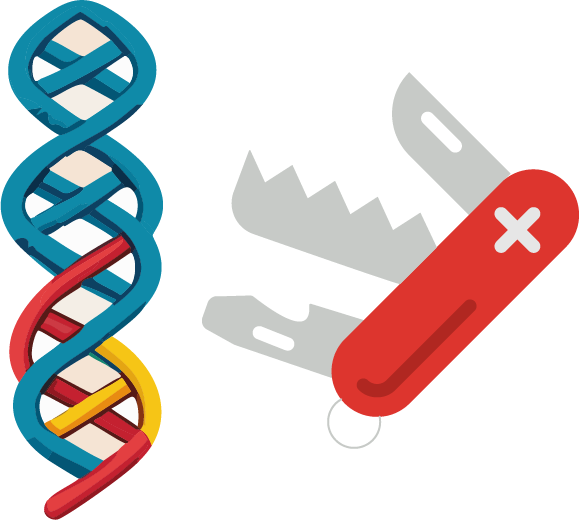

Maurice Filo
 |
Senior Research Scientist |
Recent Papers/Preprints
Anti-windup strategies for biomolecular control systems facilitated by model reduction theory for sequestration networks
Maurice Filo*, Ankit Gupta* and Mustafa Khammash
Science Advances, 2024

Inteins: A Swiss Army Knife for Synthetic Biology
Stanislav Anastassov, Maurice Filo and Mustafa Khammash
Biotechnology Advances, 2024
A Hidden Proportional Feedback Mechanism Underlies Enhanced Dynamic Performance and Noise Rejection in Sensor-Based Antithetic Integral Control
Maurice Filo*, Mucun Hou*, and Mustafa Khammash
BiorXiv, 2023
Biomolecular Feedback Controllers: from Theory to Applications
Maurice Filo, Ching-Hsiang Chang and Mustafa Khammash
Current Opinion in Biotechnology, 2023
News
| 2024 Jan | Promoted to Senior Research Scientist in BioSystems Science and Engineering, ETH Zurich |
| 2023 Nov | Taught Control Systems at Ashesi University in Ghana as part of the ETH for Development Masters Program |
| 2023 Oct | Our group received the SNSF Advanced Grant titled: "Theory and Design of Advanced Genetically Engineered Control Systems" |
| 2023 Jul | Filed a patent titled "Intein-based controllers" |
| 2021 | Our PID patent ranked among the Top 20 Inventions Spark Award |
| 2020 Nov | Filed a patent titled "Expression system and method for controlling a network in a cell and cell comprising the expression system" |
| 2022 Dec | Organized an invited session at the 61st IEEE Conference on Decision and Control in Mexico titled "Biological Controllers" |
| 2019 Jan | Received the Best PhD Thesis Award, Center for Control, Dynamical-Systems & Computations (CCDC) |
| 2018 Sep | Started Postdoc in BioSystems Science and Engineering, ETH Zurich |
| 2018 Jun | Completed PhD in Mechanical Engineering, University of California, Santa Barbara |
| 2017 | Completed MS in Mechanical Engineering, University of California, Santa Barbara |
| 2015 | Received the Best Teacher Assistant Award at the Department of Mechanical Engineering, UCSB |
| 2013 Oct | Received the CCDC Outstanding Scholar Fellowship |
| 2013 | Completed MS in Electrical and Computer Engineering, American University of Beirut |